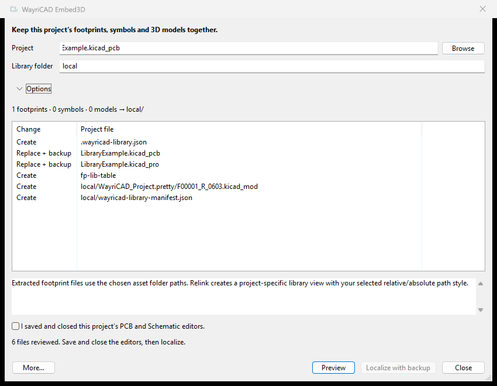

Keep symbols, footprints and 3D models in local/ inside the project, or choose another relative folder.

The .pretty library, symbol library and models use project-relative links. Placed schematic assignments, PCB IDs and model addresses are updated together. Native normalization and staged validation run in an isolated local worker.
More → Upgrade a project copy preserves legacy hierarchy instances and verifies native connectivity. Advanced asset tools retains selective embedding, extraction and relinking. Missing external model files require their source folder or explicit partial mode.
Backups live under .wayricad-backups/. Restore checks hashes and protects later edits. CLI: wayricad-library localize-project board.kicad_pcb --apply and wayricad-library restore-local BACKUP --apply.
KiCad 10 native Python is required for native normalization and validation. KiCad 11 acceptance remains unverified.